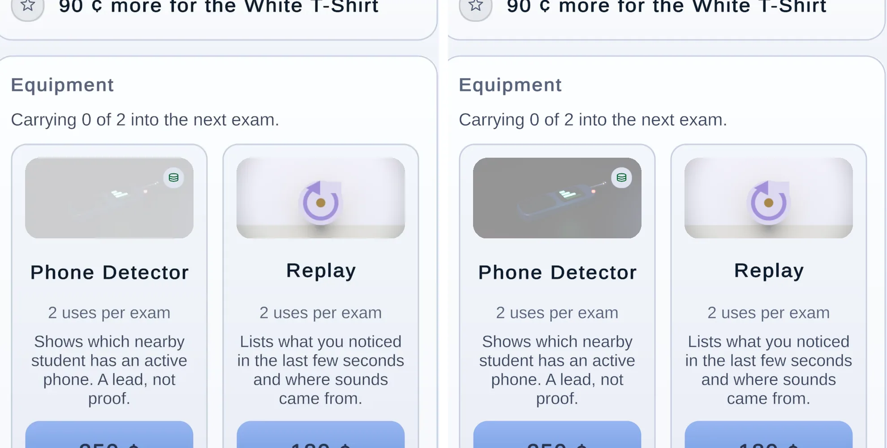
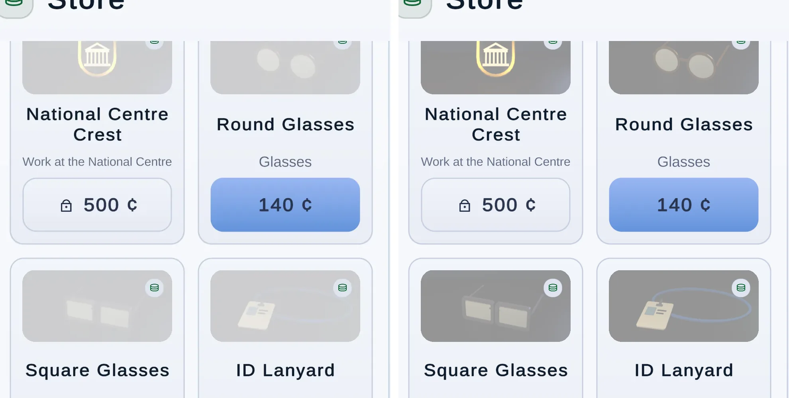

Light Theme
Players can now choose the colour theme in Settings: Dark, Light or Follow phone. Dark stays the default, so nobody sees a change until they pick. Every screen is below in Dark next to Light, captured in the game at 1080 × 2340.
screen types checked in Light, 29 frames each way, all eight schools' day heroes included.
every text role and every tone used as type, on every light ground. Button labels too, at both ends of their gradient.
for each theme change. The UI is built again from the new theme on the next frame, without an entrance animation and without leaving the screen.
changes to how Dark looks. Every new token keeps the dark theme's old value.
How it works
- Stored in the player's settings file (
proctor_settings.json) asTheme:Dark,LightorFollowPhone. The format is still version 1, because the key is only an addition. An old file has noThemeand loads as Dark. A value this build does not know falls back to Dark and keeps every other setting. - Light is a new shipped theme,
GameTheme.ModernLight(). It changes colour only: type, spacing, corners, sizes and motion are inherited from Dark. It uses the same indigo family on cool off-whites. The colours chosen for a dark page (bright green, pale brass, sky blue) were near 2:1 on white, so all of them are darker here. - Follow phone asks Android for
Configuration.uiMode's night bits. The answer is cached and asked again whenever the game comes back to the front, so a phone switched to dark mode in the quick-settings shade changes the game when the shade closes. The editor and other platforms have nothing to ask, so Follow phone shows Dark there. - Applied at boot, before the first screen is built, and live afterwards. When the theme changes,
UiRoot.Rebuildbuilds every screen again and the router redraws them from game state on the same frame. Nothing is lost, because every screen draws from state. The chrome inset and how far the page was scrolled are carried across. Entrance animations are held for that frame, so the switch is one clean frame with no flash. The Store and Wardrobe are drawn again too, because the Store's redraw key now includes the theme. - Settings has a Theme row in Display and help, built from the existing segmented control. The Manual has no settings section, so it has no new line.
Screens checked
| Screen | Light | What was done |
|---|---|---|
| Title | Pass | Daytime render; heavier scrim than Dark |
| Hub, all 8 schools | Fixed | Rank line faint over daytime sky: solid scrim ground under the text block (HeroScrim tokens) |
| Career tab | Pass | |
| Offer cards (one and two schools) | Pass | |
| Event cards (6 objects) | Pass | |
| Pre-exam brief | Pass | |
| Exam HUD | Pass | |
| Admission | Fixed | Disabled buttons: white on pale tint, now DisabledInk |
| Results | Fixed | Periwinkle page: ScrimTopTint token |
| Store | Fixed | Not-owned veil: NotOwnedVeil role, 30% in Light. Disabled prices: DisabledInk |
| Wardrobe | Fixed | Same veil role. Preview stage background reads a token |
| Settings | New | Theme row added |
| Manual | Pass |
Fixed for every screen, through tokens. All of these keep Dark exactly as it was.
- The faint rank line. The hero's scrim is now a theme decision (
HeroScrimReach,HeroScrimStrength,HeroScrimSolid). Dark keeps its single ramp. Light lays a solid ground under the whole text block and ramps above it, and its accents are dark enough to read on that ground (5.2:1 or better). The cost is that less of the daytime building shows behind the words than in Dark. - Disabled buttons fade toward the page. On a light page that leaves a pale tint, and their white labels read at about 2:1. Light now names a
DisabledInk(slate) for them. Dark leaves it clear and keeps the old ink. - Full-screen card pages (results, events, the brief, the title) multiplied the dark theme's cool tint into the light page and turned it periwinkle. That tint is now
ScrimTopTint. - The drawn shop tiles' cache is cleared on a theme change, and the strip of camera background outside the safe area follows a theme change while a screen covers the room.
The Store's not-owned veil
A baked shop tile you do not own sits under a veil of the card's surface colour, with a coin mark where an owned item's check would be. Dark has always used 62%, which dims a render on a dark card. On a white card the same 62% bleached the art to almost nothing. The veil is now a theme role, NotOwnedVeil: Dark keeps exactly 0.62, so it is pixel-identical, and Light uses 0.30. That was judged on the Phone Detector, the pills, the hats and the glasses. At 0.35 the Phone Detector was still faint, and at 0.25 the tiles began to look owned. The coin mark reads on top of the veil at 0.30, and the price button still says what it costs.


The Store and Wardrobe session OKed the one StoreScreen change this needed: StoreScreen.NotOwnedVeil now reads the role. Their three checks are fine. The Store redraws after a theme change (the store key carries the theme revision). SupervisorPreviewStage takes its background from the RaisedTop token. In a room started in Light, the phone-detector disc, the unwell haze and the row numbers look right.
Contrast
WCAG contrast ratios for the light theme's text roles. "Worst ground" is the lowest across cards, raised cards, both ends of the page gradient and the floating exam chrome; for every role here it is the bottom of the page (#E4E9F2). Dark is shown for comparison and is unchanged. ThemeChoiceTests fails the build if any light pair drops below 4.5:1, chips on their own 20% wash included.
| Role | Light value | On a card | Worst ground | Dark, worst |
|---|---|---|---|---|
| TextPrimary | #111A2E | 17.0 | 14.2 | 11.9 |
| TextSecondary | #38445E | 9.6 | 8.0 | 7.0 |
| TextMuted | #56627C | 6.0 | 5.0 | 4.7 |
| Primary | #1E56CF | 6.3 | 5.2 | 3.5 |
| Success | #0B6B45 | 6.4 | 5.4 | 3.8 |
| Danger | #A9312C | 6.5 | 5.4 | 2.6 |
| Warning | #A3430A | 6.1 | 5.1 | 4.5 |
| Accent / Reputation | #684A06 | 8.0 | 6.7 | 7.6 |
| Money | #0F6A35 | 6.6 | 5.5 | 7.3 |
| InstitutionSchool | #0C6D4A | 6.2 | 5.2 | 5.3 |
| InstitutionUniversity | #2357C8 | 6.3 | 5.3 | 4.6 |
| InstitutionProfessional | #6243C0 | 6.7 | 5.6 | 4.7 |
| Button label, on the lighter top of its gradient | Light | Dark |
|---|---|---|
| OnPrimary on PrimaryTop | 4.7 | 3.0 |
| OnSuccess on SuccessTop | 5.4 | 2.4 |
| OnDanger on DangerTop | 5.9 | 3.8 |
| OnWarning on WarningTop | 5.6 | 2.3 |
| OnAccent on AccentTop | 6.3 | 11.9 |
Every screen, Dark and Light
Captured in the game (ThemeCaptures), with the theme picked through the setting and applied live. Tap a frame for the full 1080 × 2340 image.
The Theme row: Dark / Light / Follow phone on the shared segmented control, with one line saying what Follow phone does. Picking one restyles this screen in place.
The daytime exam-room render. The light scrim is laid on higher, so less of the room shows under the name than in Dark.
The rank line now sits on a solid ground. It was faint over the daytime sky.
Ring, stars, the "you are here" brass and the salaries all read on white.
The money-only warning is in Warning, 6:1 on the raised card.
The event objects are one render for both themes, like a photograph in a card.
Reject and Admit are disabled while the person walks to the desk. Their labels were white on a pale tint (about 2:1); they now take a slate ink.
The floating chrome over the room. The room itself does not follow the theme, by design.
The page behind the card was periwinkle: the dark theme's scrim tint multiplied into a light page. It is a theme token now.


Prices you cannot afford take a slate ink. The not-owned veil over the tile art is lighter in Light (30%, Dark keeps 62%), so the Phone Detector and the pills read.


The preview stage reads the RaisedTop token and matches its card. Hats you do not own read through the lighter veil.


Glasses, the lanyard and the crests read; the coin mark still sits clearly on the veil.


On the phone
Galaxy A15 (SM-S156V, 90 Hz), development builds, checked on the player's own career, which was backed up first and restored byte for byte afterwards. The first pass used origin/main 4000368. It found a stray Back button, a long freeze on each switch, and two scroll problems. These were fixed on theme-fixes (3f56119), and that build was checked again. The table is the fixed state.
| Check | Result | What happened |
|---|---|---|
| Old settings file | Pass | The phone's settings file predates the option. The game opened in Dark. |
| Switch from the hub, Store and Career tabs | Pass | Every switch restyles Settings in place with no Back button above the tab bar, and every tab opens in the new theme. Before the fix, the router drew the panel before the chrome, so the rebuilt Settings asked a not-yet-shown tab bar whether it was there. |
| Switch from the title and the exam pause | Pass | Live from both. From the pause, Back returns to the same exam with the clock and the room intact. |
| Cost of a switch | Better | The worst frame of a switch is now 189 to 211 ms, down from 370 to 390 ms. The restyle itself is 40 to 46 ms: only the screens on view are rebuilt, the rest follow one per frame in two frames of 67 to 100 ms, and the sprite and scene caches are kept. The other 72 to 90 ms is drawing Settings itself, the same cost as moving a slider. Getting a switch under 100 ms would need screens that recolour in place, which is out of this fix's scope. |
| Follow phone and resume | Pass | It follows on return, about half a second after focus (still the old theme at 0.7 s, the new one by 2.5 s). The phone is now asked 3 frames and 0.3 s after focus returns, so the restyle is a frame of its own (189 ms). Before, it sat on the 1.3 s resume frame. The resume frame itself is now 977 ms, with 3 ms of that in the game's scripts; the rest is the platform bringing the app back. Switching from the quick-settings shade follows when the shade closes. With the game kept in front, it follows when focus next returns. |
| Scroll after a restyle | Pass | Kept exactly through the shade case and the resume case. The place is now carried in pixels and applied again once the layout settles; before, one case kept it and one lost it. |
| Where a screen opens | Pass | Settings, the Career tab and every other panel now open at the top. Before, they opened wherever the previous tab had been scrolled. A redraw of the same screen (a slider, a purchase) keeps its place. |
| Light screens | Pass | Title, two schools' day heroes, event and audit cards, admission, exam HUD, results, Store (30% veil, coin mark), Wardrobe and Career all read. No offer card came up. |
| Frame rate and logcat | Pass | A steady 45 fps (p95 22.3 ms) in Light, the same as Dark. No crash, ANR or exception; the only errors are the development player's socket lines. |
Left as they are, by decision: the heard-noise line fades its text while its card stays solid, which reads weaker on a white card (crop). The strip above the safe area shows the room behind Settings, the Store and events. Both are the same in Dark.

The switch from every tab: no Back above the tab bar


Settings from the title and the exam pause


Follow phone, and the scroll kept


Light on the phone


And Dark, live


Not verified yet
- An offer card on the phone: none came up in this run. The editor captures above cover both offer cards.
- Follow phone on a phone with Samsung's dark-mode schedule turned on. This phone's schedule is off, and the check changed dark mode by hand.